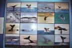
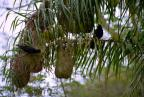

|
Voir le trajet en détail (étapes, durée, coût)
| Le Perito Moreno |

|
Dimanche 2 septembre -
On quitte déjà le Chili. Un mois, c'est vite passé.
Lire la suite ...
|
| Les baleines |
|

|
Jeudi 6 septembre -
Les argentins sont vraiment des fils de colons. Il y en a de tous les types,
des espagnols aux cheveux noirs et peau foncée aux blonds aux yeux bleus, et
plein de mélanges entre ça, sans compter les descendants des indiens métissés.
Lire la suite ...
|
| Buenos Aires |
|
|
Samedi 8 septembre -
On arrive à Buenos Aires vers 8H00 du mat, après quelques 16 heures de bus.
Mais le moins confortable des bus argentins, c'est quand même le luxe par rapport
à ce qu'on a pu utiliser comme moyens de transport en Asie.
Lire la suite ...
|
| Iguazu |
|

|
Mercredi 12 septembre -
On arrive à Port Iguazu, pas frais à 8H00 du matin au milieu du végétation
tropicale. Il y a quelques jours, on était encore en Patagonie...
Lire la suite ...
|
| Salta |
|
|
Vendredi 14 septembre -
Je sais que ça peut paraître choquant de dire ça alors qu'il y en a qui ont
du mal à prendre 15 jours de vacances faute de temps ou d'argent, mais il ne
nous reste que 3 mois et 10 jours de vacances... et il nous reste encore à visiter
la Bolivie, un tout petit bout du Brésil, un peu le Mexique pour finir par le
Costa Rica.
Lire la suite ...
|
| Tilcara |
|
|
Mardi 18 septembre -
On nous a conseillé d'aller à Jujuy pour trouver un bus pour Purmamarca. D'ici,
Salta, les bus nous laisseraient à 3 km du village, c'est pas cool avec nos
gros sacs!
Lire la suite ...
|
La suite du voyage : La Bolivie
|